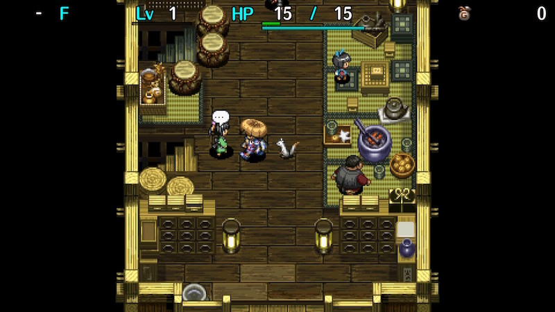

Training Facility

Optional tutorials on how to play the game.
You'll receive a random item each time you complete a topic for the first time.
Dungeon Overview
| Unlock | Available from the start. | ||
| Entrance | Inori Village (Beginner House) | ||
| Topics | 52 |
| Bring Items | No |
| Clear Icon |
Items
Each item has a frequency value (F), and a higher number means it's more common.
| Weapon | F | Shield | F | Bracelet | F | Grass | F | Scroll | F | Staff / Pot | F | |||||
|---|---|---|---|---|---|---|---|---|---|---|---|---|---|---|---|---|
| Myopic Masher | 3 | Heavy Shield | 3 | Growth Bracelet | 5 | Revival Grass | 20 | Confusion Scroll | 60 | Seal Staff | 30 | |||||
| Drain Dagger | 3 | Blast Shield | 3 | Anti-Cnf. Bracelet | 10 | Strength Grass | 20 | Slumber Scroll | 60 | Electric Staff | 60 | |||||
| Copper Cleaver | 3 | Diet Shield | 3 | Alert Bracelet | 10 | Dragon Grass | 60 | Vacuum Slash Scrl | 60 | Empathy Staff | 30 | |||||
| Crescent Katana | 3 | Counter Shield | 3 | Cleansing Bracelet | 10 | Stomach Expander | 60 | Fear Scroll | 60 | Transient Staff | 60 | |||||
| Magic Masher | 3 | Wolfshead | 3 | Staunch Bracelet | 10 | Swift Grass | 60 | Trap Deletion Scrl | 60 | Paralysis Staff | 30 | |||||
| Beast Fang | 3 | Gold Shield | 3 | Strength Bracelet | 20 | Perception Grass | 60 | Fate Scroll | 25 | Swap Staff | 60 | |||||
| Katana | 12 | Iron Targe | 12 | Power Up Grass | 60 | Earth Scroll | 25 | Knockback Staff | 60 | |||||||
| Rusty Pickaxe | 3 | Tin Shield | 30 | Upgrade Seed | 60 | Plating Scroll | 25 | Pinning Staff | 60 | |||||||
| Dull Gold Edge | 3 | Plain Targe | 60 | Otogiriso | 60 | Navigation Scroll | 60 | Slow Staff | 30 | |||||||
| Tin Blade | 30 | Antidote Grass | 60 | Escape Scroll | 60 | Mage Staff | 60 | |||||||||
| Ordinary Stick | 60 | Warp Grass | 60 | Oil Scroll | 60 | Preservation Pot | 100 | |||||||||
| Herb | 60 | |||||||||||||||
Topics
There are a total of 52 topics.
| Page 1 | Page 2 | Page 3 | Page 4 | Page 5 |
|---|---|---|---|---|
| Finding the stairs | Walk around to heal | Corners are your friends | Seals and blessings | Launching creatures |
| Moving diagonally | Equipment is your friend | Passageway duels | Equipment upgrades | Hiding in pots |
| Effective dashing | Projectiles and range | Items in pots | Annoying cursed items | Lifesaving scrolls |
| Turning in place | Use grass or throw it | Tide-turning talismans | Equipment synthesis | Sanctuary |
| Dealing with hunger | Staves and magic bullets | Poison reduces strength | Peaches | Go nuts for Nuts |
| Using the map | Effective scroll usage | Unidentified items | Everyone hates traps | Stop! Thief! |
| Page 6 | Page 7 | Page 8 | Page 9 | |
| Dodge using diagonals | Hunger for health | Fragrant pots | Hit & Run tactics | |
| The wind blows eventually | Throw long | Zalokleft, I choose you! | Urchins can explode! | |
| Using Mixer | An ounce of prevention... | Mo' Gitan, mo' pain | Combining | |
| Close the door | Seal the bad traits | Combining staves | Tricky fakes | |
| Hidden passageway | Use the staves to flee | Resorting to brute force | ||
| Monsters level up, too | Effects of water | Suspicious behavior |